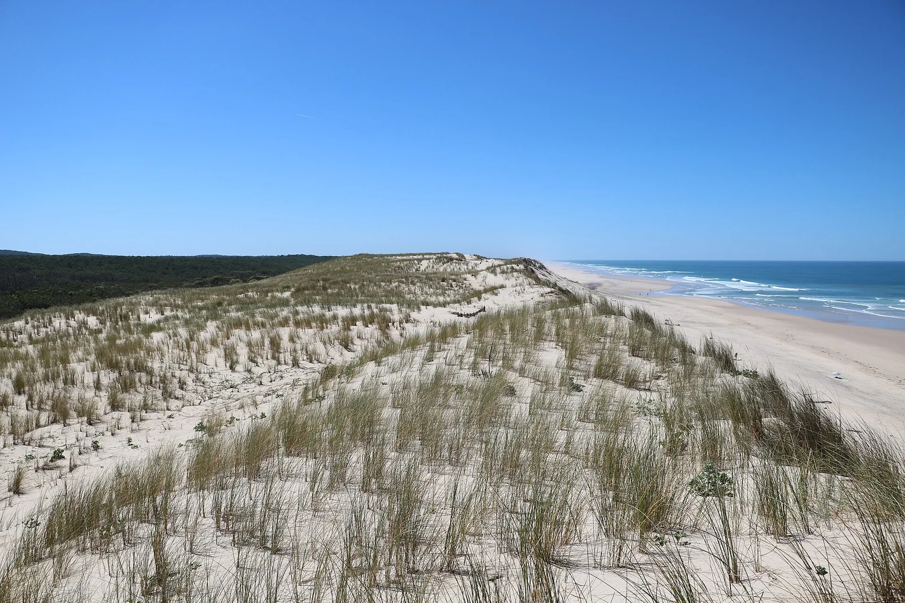

Hourtin-Plage
Gironde, France · surf

À Hourtin, la plage océanique complète les paysages du lac. Un arrêt sur la côte de sable du Médoc.
- Lieu
- Gironde, France
- Niveau
- Variable selon les conditions
- Activités
- surf
- Type d'eau
- Mer / océan
- Coordonnées
- 45.22, -1.17 (position approximative du secteur)
Ouvrir dans Ocean Buddy Télécharger sur l'App Store
Source : France.fr.